cuTile down to SASS: building maiku on RTX PRO 6000 Blackwell
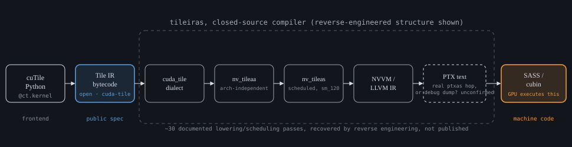
the whole pipeline in one picture: open bytecode in, undocumented SASS out, one closed compiler in the middle
Introduction
Every kernel in maiku is written in cuTile. NVIDIA's own docs (docs.nvidia.com/cuda/cutile-python) cover the DSL well enough that redoing the tile-vs-thread pitch here would just be a worse copy of something you can already read. What isn't written down anywhere is what happens after you write the kernel: what actually compiles it, and what that compiler hides from you.
One thing from the DSL is worth keeping in mind before the compiler stuff, because it explains why tile shape and grid size keep coming up. A @ct.kernel takes four scheduling knobs, occupancy, num_ctas, num_worker_warps, opt_level, plus a tile shape and a grid at launch. That's everything you control besides the actual math. Four of the five big speedups in this post came from exactly two of those knobs: tile shape and grid size. The math never changed. Fewer knobs means fewer places to look when a kernel is slow, and the one you find usually matters a lot.
How cuTile actually lowers
cuTile Python doesn't compile straight to SASS. It compiles to Tile IR bytecode first, an open MLIR format (the cuda_tile dialect, github.com/NVIDIA/cuda-tile, Apache 2.0), and every frontend that wants Tile IR goes through the same door. NVIDIA's EuroLLVM 2026 talk on the dialect (Matthias Springer and Lorenzo Chelini, "CUDA Tile IR: Lessons from a Tile Centric CUDA Dialect for MLIR") draws it as cuTile Python, C++ through nvcc, an experimental Rust frontend, a Triton backend, and a teaching frontend called cuTile BASIC, all producing the same cuda_tile bytecode. One closed-source compiler takes it from there: tileiras, called "conceptually similar to ptxas" in the same talk.
What that compiler does at the last step isn't a matter of opinion. The build is three commands:
$ cuda-tile-translate matmul_test.mlir -mlir-to-cudatilebc -o matmul_test.bc
$ tileiras --gpu-name=sm_100 matmul_test.bc -o matmul_test.o
$ cuobjdump -sass matmul_test.o
and what cuobjdump pulls out of that object is real, undocumented Blackwell SASS: UTMALDG.2D, UTCHMMA, UTMASTG.2D. Same slide: "PTX is documented, but tileiras will generate SASS only." Tile IR isn't PTX with tile syntax bolted on. It goes straight to SASS, and none of those instructions have public documentation anywhere.
Skipping PTX buys something specific. PTX is a SIMT virtual ISA, so a tile-aware compiler that lowered through it would have to flatten every tile down to per-thread instructions and hope ptxas reconstructs the tile structure for tensor cores and TMA on the other side. Tile IR keeps the tile shape all the way to the final scheduling decision instead, which is how tileiras gets to emit instructions like UTMALDG.2D that never had to become part of PTX's public ISA in the first place.
The stability promise here is smaller than it sounds, and it's easiest to just quote it: there's no stability guarantee on the text format, only on the bytecode. An .mlir file that compiles today isn't a promise. The bytecode is.
There are two ways to load a tile, and it matters which one you use. A view-based load goes through a tensor_view, which carries its own shape and strides, so the compiler has everything it needs to build a TMA descriptor. A pointer-based load, closer to how Triton does it, builds the tile's addresses by hand, and recovering enough structure from that arithmetic to still use TMA is much harder for the compiler to prove. NVIDIA's own guidance is blunt about which one to prefer: view-based loads with declared alignment are the recommended path for anything performance-critical.
The Tile IR memory model
Every tile load or store is really one memory operation per element, and by default none of them are ordered against each other. The default scope is weak. The dialect's own example for what that means is worth using directly, it's three lines:
%cst = constant <f32: [0.0, 1.0, 2.0, ...]> : tile<64xf32>
%r0 = store_ptr_tko weak %ptr, %cst -> token
%data, %r1 = load_ptr_tko weak %ptr -> tile<64xf32>, token
What is %data? The snippet doesn't say. The store's token and the load's input aren't connected, so the two only share an order on the page, not at runtime, and order on the page isn't a guarantee in Tile IR. A token exists only at compile time, with no runtime form: it's just the compiler's way of knowing "keep these two in order." Without one, the load and store can run in whatever order the backend wants. NVIDIA shows three legal lowerings of that exact snippet: one runs the sixty-four stores and loads in reverse order against each other, one runs them matching, one merges the whole thing into two cp.async.bulk.tensor calls issued by a single thread, TMA's async bulk copy. All three are correct. That's the point: correctness comes from the token, never from reading the code top to bottom.
The hardware
Every number in this post came off one card: an NVIDIA RTX PRO 6000 Blackwell Server Edition, GB202, sm_120 (B200s got expensive enough that tuning against one isn't worth it right now). One fact about it has to land before any benchmark table, or every bandwidth number later will read wrong.
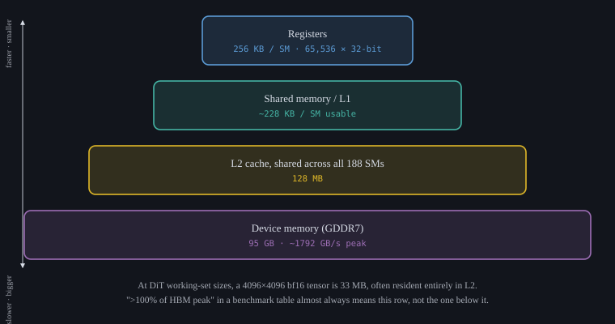
the SM120 memory hierarchy, top to bottom: read every benchmark table in this post against this picture
The L2 is 128 MB, shared across all 188 SMs. A 4096x4096 bf16 tensor is 33 MB. At the shapes a diffusion transformer runs, inputs and outputs usually sit in L2 for the whole kernel, sometimes the whole forward pass. So when a table later says ">100% of HBM peak," that's not a mistake. It's an L2 number, and reading it as DRAM will get you the wrong conclusion.
The register file matters less often, but hard when it does: 65,536 32-bit registers per SM, split across however many CTAs the occupancy setting keeps resident. Keep one tile too many live, or pick a tile too tall for the budget, and it spills to local memory, which is just DRAM wearing a different name. It still compiles. It's still correct. It's just slower, and nothing in the output tells you why. The arithmetic is worth doing once: at occupancy=2 and 128 threads per CTA, the budget is 128 KB per CTA. An attention kernel holding acc, q, k, and v at TILE_M=128, TILE_N=128, D=128 needs 160 KB, 32 KB over budget, guaranteed spill. Drop to TILE_M=64 and the same four tiles need 112 KB, 16 KB of headroom, no spill. Nothing about the kernel's correctness changed between those two numbers.
TMA sits underneath ct.load/ct.store whenever the access pattern qualifies: dedicated hardware for indexed loads and stores against a fixed pattern, separate from a normal thread-issued load. A kernel talks to it through a latency= hint:
x0 = ct.load(X, index=(b, h, bid_s, 0), shape=(1, 1, TILE_S, TILE_D2),
padding_mode=zero, latency=7)
The hint isn't a request for TMA. It tells the scheduler how far ahead to issue the copy, and the compiler decides from there whether the pattern is regular enough, static shape, known strides, to actually route through TMA, or fall back to per-thread loads.
CTA clusters work the same way. sm_120 groups cooperating CTAs into a cluster with its own SM-to-SM interconnect, and Tile IR's optimization guide says clustering buys "dual CTA MMA instructions, multicast TMA, distributed shared memory, and cluster wide barriers." None of that is something you call directly. It's all behind one integer, num_ctas, on or off, nothing finer. maiku has hit both sides of this. Mix a two-pass reduction with num_ctas=2 and the GPU hangs outright on sm_120, no error, just the hang. A second, milder case of the same mistake: forming a cluster for an attention kernel with nothing to actually share across CTAs costs 20x, observed directly in an autotune sweep, not a hang this time, just 20x slower for no benefit. And the same wide cluster that speeds up a plain bf16 or fp8 GEMM slows down a block-scaled mma_scaled GEMM on the same card, the opposite of what you'd guess. That one gets explained properly once linear_mxfp8 comes up.
Peak throughput on this card is 500 TFLOP/s FP16 and 2000 TFLOP/s FP4, by Colfax's own measurement on the RTX PRO 6000. sm_120 is Blackwell, but not all of it. B200 (SM10x) issues its block-scaled matmul through the asynchronous tcgen05.mma, reading operands out of Tensor Memory. sm_120 has neither tcgen05 nor TMEM: it issues the synchronous, warp-collective mma.sync instead, sourced straight from register memory. Colfax states the consequence plainly: "SM10x GEMM kernels are completely incompatible with SM12x and will not run on those devices." mma_scaled, the block-scaled path maiku's MXFP8 and NVFP4 kernels use, is what mma.sync looks like from cuTile, and it schedules differently because it has no TMEM to fall back on. The actual PTX instruction behind NVFP4 block-scaled matmul is mma.sync.aligned.kind::mxf4nvf4.block_scale.scale_vec::4X.m16n8k64.row.col.f32.e2m1.e2m1.f32.ue4m3, one fixed 16x8x64 MMA atom, which is the shape tileiras is actually scheduling around whenever mma_scaled shows up in a kernel. Against the older sm_8x consumer cards, sm_120 gains sub-byte and block-scaled types, TMA, Cluster Launch Control, and PDL.
The other card in this post is sm_90, Hopper. maiku keeps real tuned constants for both, and they disagree enough to put side by side:
| sm_90 (H100 SXM) | sm_120 (RTX PRO 6000) | |
|---|---|---|
| SMs | 132 | 188 |
| L2 | 50 MB | 128 MB |
| memory | 80 GB HBM3 | 95 GB GDDR7 |
| peak bandwidth | ~3.35 TB/s | ~1792 GB/s |
| register file / SM | 256 KB | 256 KB |
The register budget per SM hasn't changed since Volta. Everything else has: sm_120 has more than double the L2 and about half the bandwidth of sm_90. A kernel tuned to be memory-bound on one isn't tuned to be memory-bound on the other, which is why maiku/_configs.py keeps separate ct.ByTarget(sm_90=..., sm_120=...) entries instead of one number for "Hopper-class hardware."
What maiku is
maiku is a cuTile kernel library for diffusion inference, built around Z-Image Turbo and, more recently, a Krea 2 Turbo port. Every kernel is a real PyTorch operator, not a wrapper around one:
import maiku, torch
x = torch.randn(1024, 3840, device="cuda", dtype=torch.bfloat16)
w = torch.randn(3840, device="cuda", dtype=torch.bfloat16)
y = maiku.rms_norm(x, w)
y = torch.compile(maiku.rms_norm, fullgraph=True)(x, w) # no graph break
That second line is why the library is built the way it is. maiku.rms_norm is torch.ops.maiku.rms_norm_fwd, with a fake implementation and an autograd rule, so it's opaque to Dynamo instead of something torch.compile has to trace through. Here's why that matters: a custom_op body runs below the autograd dispatch key, so wrapping a cuTile launch in a plain torch.autograd.Function and calling .apply() inside a traced region builds a graph that gets thrown away. The output doesn't require grad, backward returns nothing, and nothing errors at the call site. Wrong answer, not a slow one, and it's the kind of bug a forward-only test suite never catches.
Under that sits a second layer, maiku.ops.<name>, dispatch across the handful of ops where more than one backend genuinely competes: cuTile, a TileLang backend, a torch reference, each with its own supports() check and priority. One rule keeps the two layers from fighting: a dispatched call always goes through the registered operator, never straight to the kernel launcher. An unsupported shape is just supports() returning false, cheap, expected. A kernel that claims a shape and then raises is a bug, and it gets disabled for the rest of the process instead of retried on every call.
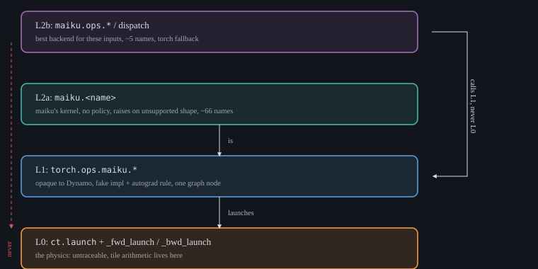
maiku's three call surfaces, and the one rule holding them together: a dispatched call always goes through the registered operator, never straight to the kernel
What's actually in the kernel set:
| area | kernels |
|---|---|
| norms / modulation | rms_norm, layer_norm, ada_ln, modulate, modulate_bcast, layernorm_modulate, softmax |
| activations | swiglu, geglu, geglu_tanh, plus fused fp8-output variants |
| attention | bidir_attn (bf16), fp8qk, mxfp8qk, sage_attn (INT8), sage_attn3 (NVFP4) |
| GEMM | linear and fused linear_gelu / linear_swiglu in bf16, fp8, and MXFP8; group_gemm |
| rotary | rope, rope_, rope_qk |
| samplers | euler_step, cfg_euler_step, ddpm_step, ddim_step, lerp |
| quantization | per-tensor / per-token / per-channel fp8, MXFP8, NVFP4 |
| fused blocks | norm_qkv_fused, norm_ffn_swiglu, gate_res_add, z_image_transformer_block |
| caching | block-skip sigma measurement and schedules |
A couple of these against the best available alternative, swept across shapes:
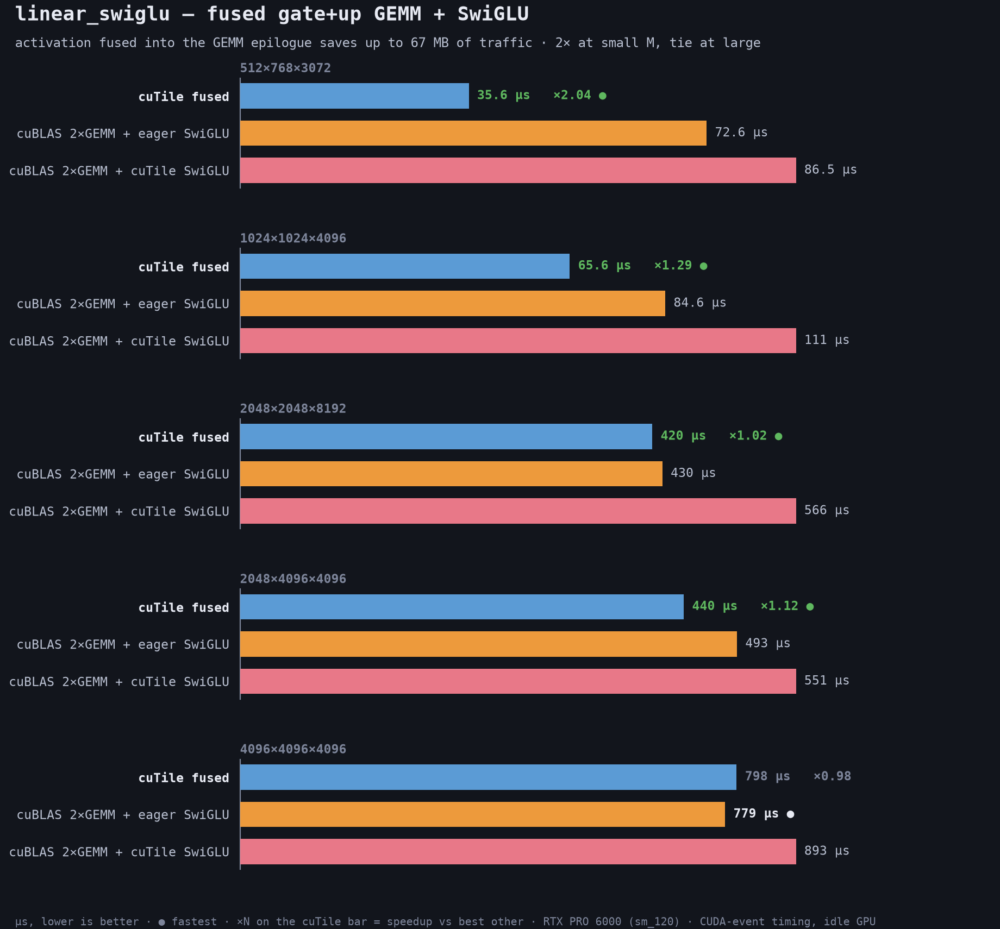
linear_swiglu: fusing the activation into the GEMM epilogue wins big at small M, ties at large M where the GEMM itself dominates
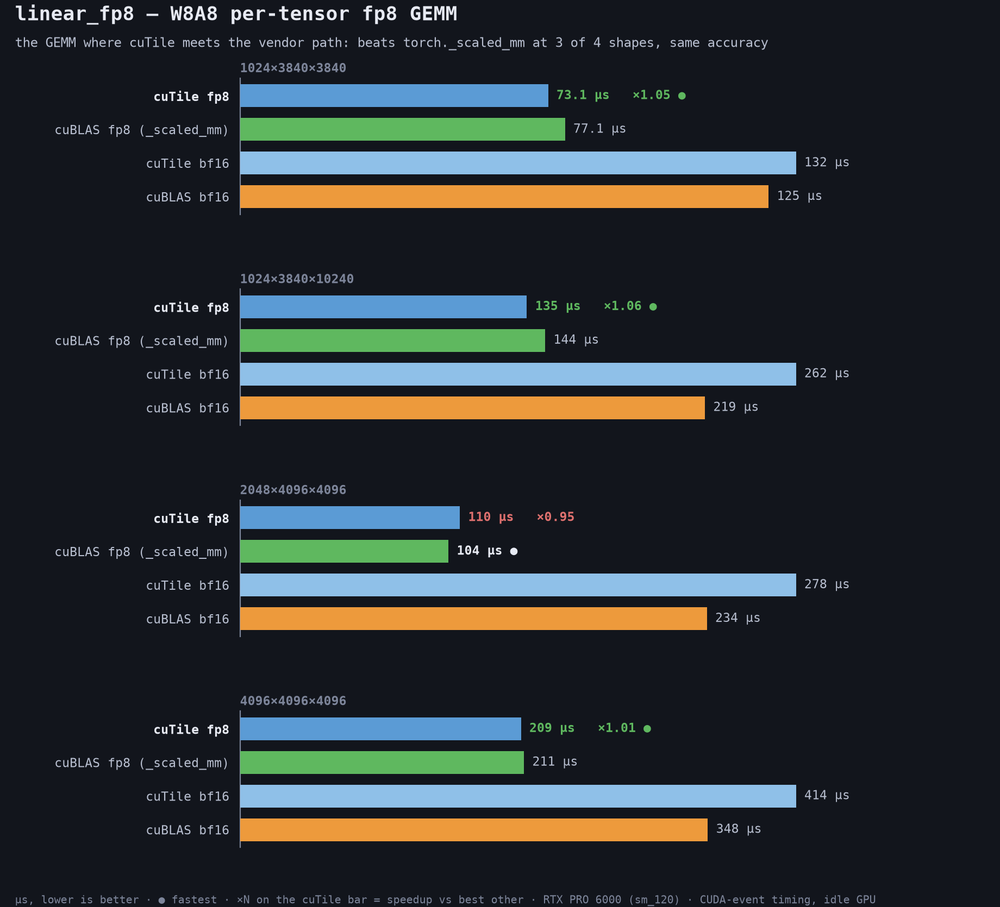
linear_fp8: the one GEMM where cuTile meets the vendor path directly, beats torch's _scaled_mm at three of four shapes tested
Why not just use TileGym
NVIDIA ships its own cuTile kernel library, TileGym. It's built for LLM inference, and a diffusion transformer is different enough that it shows fast: no AdaLN kernel, an attention loop that's causally biased even when you want bidirectional (every DiT block does), no cross-attention kernel, SwiGLU and its GEMM as separate launches instead of fused, and no backward kernels at all, which matters the moment training shows up. None of that is a knock on TileGym. It just isn't built for this.
Modular's MAX is the harder comparison. It has real warp specialization and, on B200, TMEM-backed matmul, which sm_120 structurally can't reach. Kernel for kernel it's often faster. What closes the gap is that a diffusion pipeline's latency is mostly about how many steps it runs, not which kernel each step calls: on a FLUX.2-klein sized model, MAX only beat plain diffusers by 1.03 to 1.15x once step caching was in the picture, because skipping a step outright beats speeding it up.
Where it actually lands
The kernel-level wins matter less than the sum. On this card the patched Z-Image Turbo pipeline, a handful of kernel swaps, not a rewrite, runs at 1.16x the diffusers baseline, 1.42x with block-skip caching on top. The more interesting result is the negative one: the fully fused mega-kernel path, one launch per transformer block instead of a dozen, is slower than baseline here, 0.67 to 0.71x. cuobjdump -res-usage on the actual cubins says exactly why: the fused norm-into-triple-GEMM kernel sits at 255 registers per thread, the hard ceiling, and still spills 376 words to local memory at the row-tile width that fits, while the plain per-op GEMM it's competing against runs a tile eight times as wide at 168 registers with zero spill. Fusion isn't automatically a win. This library picks the fusions that pay off on this hardware, not every fusion it can find.
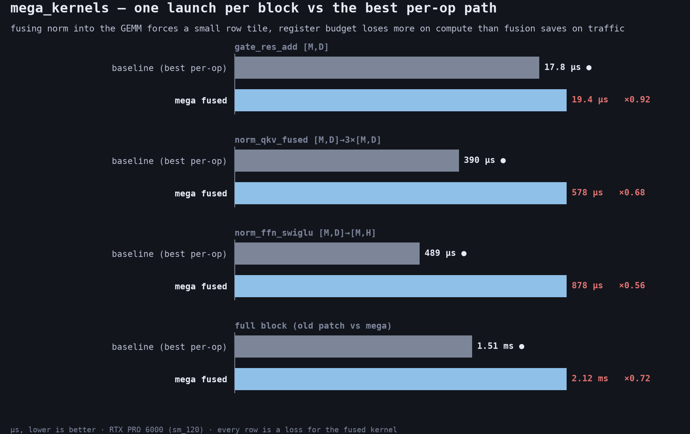
every fusion in the mega-kernel path loses to the best per-op path it replaces, worst at norm_ffn_swiglu (0.56x), least bad at gate_res_add (0.92x)
This isn't a maiku-specific finding. The wider argument about whole-model megakernels playing out right now is the same shape: fusing everything into one launch runs into real limits (nonlinearities inside a distributed op block full fusion outright, and a hand-written megakernel is hard enough to write that teams often ship separately-optimized, separately-launched kernels instead and still win). NVIDIA's own answer on Rubin is a hardware one, tile-level dependency triggers that let a consumer kernel start the moment partial data is ready, which is PDL's idea pushed further into the hardware rather than solved by fusing the source. The counter-case is Cursor's Mixture-of-Kittens, a megakernel for MoE training that's 2.37x faster than the strongest public baseline by fusing communication into compute, a narrow, specific bottleneck, not a whole model block. maiku's own numbers land on the same side of that line: rope_qk and gate_res_add, two small, specific fusions, win; norm_qkv_fused and norm_ffn_swiglu, fusing a whole norm-into-GEMM chain, lose. Selective fusion of one real bottleneck keeps paying off. Fusing everything because you can doesn't.
Z-Image Turbo, same prompt and seed [dense | patched, 1.16x faster]
Krea 2 Turbo, same prompt and seed [bf16 reference | fp8, cuTile kernels]
swiglu: the fastest byte is the one you don't move
SwiGLU splits an interleaved [M, 2N] tensor into a gate half and an up half, then computes SiLU(gate) * up. maiku's kernel does that in 24.8 microseconds at 4096x3840. Calling maiku.swiglu took 135.8.
That gap, 111 microseconds, isn't dispatch, dispatch on this box is around 6. It's two lines in the wrapper, before the kernel even runs:
gate = x[:, :n].contiguous()
up = x[:, n:].contiguous()
Both are views into the same buffer, sliced on the last dimension, and both get copied before the kernel sees them: 63 MB of copy in front of a kernel that moves 94 MB total. The kernel never needed either copy. x[:, :n] and x[:, n:] are strided views of one tensor, and a tensor_view in Tile IR carries its own shape and stride, which is exactly what lets the compiler consume the slice directly, no physically contiguous buffer required. cuTile takes strided arrays directly. The .contiguous() calls were doing nothing. One upfront .contiguous() on x (free, since x is already contiguous at these shapes) took the public call from 0.14x of torch to 0.76x, kernel unchanged: 5.50x, and none of it came from the kernel.
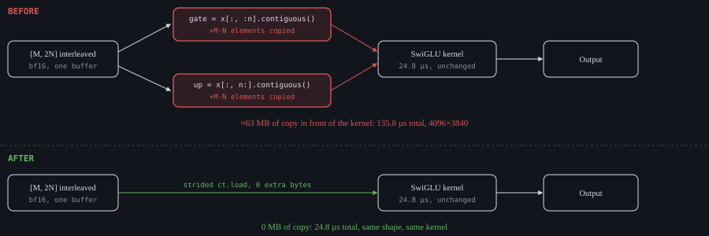
same kernel, same 24.8 microseconds, both times: the difference is entirely in what the wrapper did before calling it
It stayed hidden because of what it was compared against. Against torch eager the kernel looked mediocre, not obviously broken. Against torch.compile's fused Triton kernel, which has no equivalent copy, the same numbers looked wrong. Whatever baseline you pick decides which bugs you can see, and geglu, built on the same split, had the same bug in eight places before anyone looked.
The nsys capture backs all of this exactly. One buggy call: two elementwise_kernel copies at 48.8µs and 48.0µs, then the real kernel at 36.7µs, ≈133µs total. One fixed call: the same kernel alone, 23.7µs, copies gone entirely. Correlation IDs in the trace tie each kernel bar back to the exact cudaLaunchKernel that issued it, not just proximity on the timeline.
One more thing the capture caught that the story above doesn't say: the real kernel itself isn't quite the same speed in both captures, 35.0µs in the buggy run against 23.7µs in the fixed one, same cubin, same shape. The difference is L2. The two 31 MB copies run immediately before the kernel and evict it out of cache, so the buggy kernel reads cold while the fixed one reads warm. Removing the copies doesn't just remove copy time, it also makes the real kernel faster, for the same reason the hardware section opened on: at these shapes the tensors live in L2, and anything that touches L2 in between costs the next kernel too.
SASS confirms the load path directly: two LDG.E.128 instructions, 128-bit vectorized, addresses computed by LEA off the stride, not a TMA descriptor. The strided slice never needed TMA to skip the copy, ordinary vectorized loads were already enough once the copy was gone. REG:32, STACK:0, no spill. Every element in the tail is handled by predication, not a branch: the bounds check sets P0 once, and the load itself is @!P0 LDG.E.128, an out-of-bounds lane just doesn't issue it, no divergent path for the boundary tile.
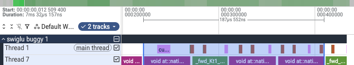
this is the actual Perfetto UI (ui.perfetto.dev) with the buggy run's kernel trace loaded, not a redraw. Thread 7 is the GPU queue: copy, copy, real kernel, back to back
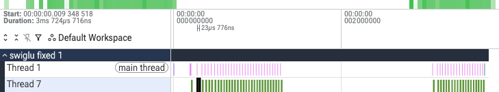
same UI, fixed run: the copy kernels are gone from thread 7 entirely, and the gaps between bars widen relative to the kernel itself because there's less GPU work now to hide the host loop behind
selecting the buggy run's kernel region in Perfetto and reading the area-selection table back gives the same numbers by construction, since both come from the same CUPTI_ACTIVITY_KIND_KERNEL table: 22 slices across three reps, 15 void at::native::elementwise_kernel copies and 7 real kernel launches, ~96% GPU-busy. The fixed run's ~74% busy figure comes from the same table query on the fixed capture. Not a mockup, this is the real CUPTI kernel trace read straight out of the tool built for reading it.
That second number is worth sitting with rather than explaining away. Fixing the bug didn't just remove 111µs of copy, it also shrank the gap the GPU sits idle between launches, from 137.2µs down to 32.8µs per rep, but the *fraction* of that shorter cycle spent idle went up, from about 1.2% to about 9%. Three kernels per rep pack a queue tightly almost by accident; one short kernel exposes the host-side loop overhead that was always there, just hidden behind more GPU work before. Same shape of finding as the small-M dispatch story elsewhere in this post, now visible directly in a real trace instead of inferred from wall-clock numbers.
The SiLU math itself is a small assembly essay on its own. e^-x goes through the fast transcendental unit rather than a general exponential: FMUL R2, R6, -1.4426950216293334961 scales by -log2(e) so a single MUFU.EX2 computes 2^(-x·log2 e) = e^-x. Before that, a range check extends MUFU.EX2's accurate domain for very negative x: FSETP.GEU.AND P0, PT, R2, -126, PT tests whether the scaled argument is in range, and if not, the kernel halves the argument, computes 2^(x/2), and squares the result back (exp2(2h) = exp2(h)²), a real, deliberate range-reduction trick, not an accident of codegen.
The reciprocal for `1/(1+e^-x)` is Newton-Raphson, not a hardware divide: `MUFU.RCP` gives a low-precision seed, two rounds of `FFMA` refine it, and an `FCHK` predicate decides whether that fast path is accurate enough. When it isn't, execution falls through to $__cuda_sm3x_div_rn_noftz_f32_slowpath, the exact same shared subroutine the fdiv finding in "what cuTile cannot do" runs into for a literal `/`. cuTile doesn't special-case division; a `/` written in source and a reciprocal hiding inside `sigmoid` both route through the identical fast-path-plus-IEEE-fallback pattern:
MUFU.RCP R0, R23 ;
FCHK P1, R22, R23 ;
FFMA R3, -R23, R0, 1 ;
FFMA R0, R0, R3, R0 ;
@!P1 BRA `(.L_x_3) ;
CALL.REL.NOINC `($__internal_0_$__cuda_sm3x_div_rn_noftz_f32_slowpath) ;
This block, guard and all, repeats eight times, once per unrolled element, each with its own FCHK and its own potential fallback call. Then the actual SwiGLU multiply runs, gate's sigmoid times gate times up, and the eight fp32 results get packed back to bf16 two at a time with F2FP.BF16.F32.PACK_AB before one predicated STG.E.128 writes the tile out. Nothing here is what a textbook description of "compute SiLU, multiply, store" would predict in instruction count, and all of it is checkable in the same file swiglu's load claim was checked against.
linear_mxfp8: why this library exists
Every kernel up to this point is maiku matching something torch can already do. linear_mxfp8 is different, torch has no MXFP8 kernel, its best option is dequantize and hand off to cuBLAS. Against that, maiku wins clearly at every shape tested:
| M, K, N | maiku | torch's best | gain |
|---|---|---|---|
| 1024, 3840, 3840 | 95.3 µs | 247.1 µs | 2.59x |
| 4096, 3840, 10240 | 726.5 µs | 1468.4 µs | 2.02x |
| 4608, 6144, 6144 | 808.1 µs | 1776.9 µs | 2.20x |
MXFP8 is e4m3 elements with one e8m0 scale, a plain power-of-two exponent, per 32 elements along K. The quantizer's best line doesn't call a transcendental at all:
f = amax / 448 # fp32
bits = bitcast(f, uint32)
byte = ((bits >> 23) & 0xFF) + (bits & 0x7FFFFF != 0) # ceil pow2 exponent
inv = exp2(127 - byte) # 1/scale, exact
An e8m0 byte is just a biased fp32 exponent, and that exponent is already sitting in the bit pattern, so the whole thing is a shift, a mask, a compare, not MUFU.lg2 then MUFU.ex2 on the amax. SASS confirms exactly this split: the byte extraction lowers to SHF.R.U32.HI (the shift), two LOP3 masks, and an ISETP.NE for the mantissa check, no MUFU.LG2 anywhere in the kernel. The 30 MUFU.EX2 instructions that are in there belong to the very next line, the reciprocal exp2(127 - byte), not the extraction. Two different lines, two different costs, and the SASS keeps them separate exactly the way the source does. That extraction pattern repeats eight times at regular intervals through the file, once per unrolled element, not a one-off. The `amax` it feeds isn't computed with Blackwell's `REDUX` reduction instruction, which exists but is integer-only; it's a two-step warp-shuffle butterfly, `SHFL.BFLY` at distances 2 then 1, a small 4-lane max-reduction rather than a full 32-lane one, consistent with each thread already owning several elements before the final combine. Rounding the scale up instead of to nearest is what makes it safe: the e4m3 cast can never go over 448, its max value, so the block max never clips. On the GEMM side, the CUTLASS blocked scale layout is an affine permutation of plain row-major, so the quantizer writes scale bytes straight into place instead of repacking afterward.
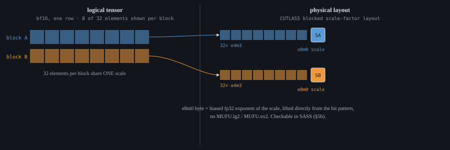
MXFP8's block scaled layout: one scale byte per 32 elements, written directly into its CUTLASS blocked position
The tuning connects back to the hardware section. The wide CGA cluster that helps a plain bf16 or fp8 GEMM hurts this one: the usual config, a 256-wide tile split across two CTAs at occupancy 4, measures 132.5 microseconds on this card. The one that actually wins is narrower and un-clustered, 128-wide, one CTA, occupancy 2, at 96.2. cuobjdump -res-usage on both compiled kernels turns "the likely reason" into a measured one:
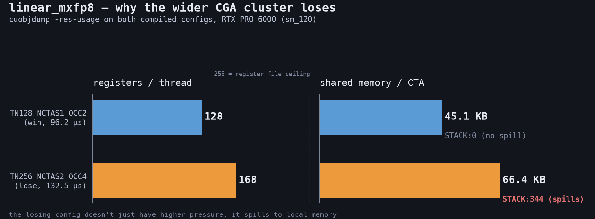
the losing config isn't just tighter on registers and shared memory, it spills: STACK:344 vs STACK:0, from real cuobjdump -res-usage on both compiled kernels
128 registers and 46 KB of shared memory at the winning config, zero spill. 168 registers and 68 KB at the losing one, and it spills 344 words to local memory on top of the extra pressure, the CGA cluster doesn't just get tight here, it runs out of room. And the tensor-core instruction itself confirms the block-scaled path is doing real extra work per MMA: QMMA.SF.16832.F32.E4M3.E4M3.E8, the scale-factor variant of `QMMA`, not plain HMMA/QMMA. The full form carries the scale operands directly in the instruction:
QMMA.SF.16832.F32.E4M3.E4M3.E8 R68, R172, R8, R68, R179, R197, URZ
A in R172 (reused across a whole row of these), B walking R8, R12, R16…, the accumulator aliased in as both source and destination, and two extra source registers, R179 and R197, carrying the E8M0 scale factors for A and B. 128 of these per K-loop at the winning config, 192 at the losing one, the wider tile issues more MMAs per iteration, which is more register-resident state per warp on top of what SFA/SFB already cost. Surrounding LOP3.LUT/PRMT instructions repack the raw uint8 scale bytes into those operand registers before each MMA. This is a real, distinct instruction, not HMMA wearing a different flag.
The full K-loop is a straight line, not a loop with a branch back. All 128 QMMA.SF instructions in the winning config sit at contiguous ascending addresses with nothing branching into the middle of that block, the compiler fully unrolled it. The real "loop" lives on the producer side instead: A and B tiles arrive through TMA, not plain loads, `UTMALDG.2D` paired with an explicit mbarrier phase check before each issue:
UTMALDG.2D [UR28], [UR10], desc[URZ] ;
SYNCS.ARRIVE.TRANS64 RZ, [UR12+0xb008], R4 ;
SYNCS.PHASECHK.TRANS64.TRYWAIT P0, [UR12+0xb028], R3 ;
That's real double buffering, an explicit arrive/phase-check pair around every TMA issue, not the generic "producer/consumer overlap" every GEMM writeup gestures at. It's also the direct opposite of swiglu's load path: swiglu's strided slice was small and simple enough that plain vectorized `LDG.E.128` was already optimal, no TMA needed. This kernel's A/B/scale tiles are TMA's actual use case, and that's what the compiler reaches for. The epilogue mirrors swiglu's bf16 repack (F2FP.BF16.F32.PACK_AB, same instruction family, confirming it's cuTile's shared conversion idiom rather than something GEMM-specific) but the store goes back out through TMA too, UTMASTG.2D, not a plain STG.
One more thing worth naming plainly: this kernel is warp-specialized, and the compiler did it without being asked, the opposite of what AdaLN showed. The SASS branches on a warp-group id (UR16) and repartitions the register file per group with real USETMAXREG.TRY_ALLOC.CTAPOOL/USETMAXREG.DEALLOC.CTAPOOL instructions, at least three distinct code paths at three different register budgets, one branch requesting up to 224 registers, another explicitly dropping to 32. "What cuTile cannot do" says there's no API to ask for warp specialization, and that's still true, AdaLN's cubin shows it really can be entirely absent. This kernel shows the other side: for a TMA-plus-tensor-core kernel, the compiler generates it anyway, on its own, with no Python-level knob that asked for it. Which kernel gets the implicit version and which doesn't isn't something this post can predict from source alone yet, only confirm after the fact in SASS.
What cuTile cannot do
cuTile is built for memory-bound work: row-wise kernels, GEMMs, anything where the win comes from moving fewer bytes or moving them from a nearer place. It has no explicit warp specialization, no named barriers, no manual TMA multicast or double buffering. The producer/consumer pattern that gives hand-written FA3 and cuDNN kernels their edge on compute-bound attention isn't something you can ask for in Python, and whether the compiler does it anyway isn't the same answer for every kernel, checking both instead of assuming either found a genuine split. AdaLN's forward compiles to 255 registers per thread, the backward to 128, no SETMAXNREG anywhere in either cubin. `linear_mxfp8`, TMA-plus-tensor-core shaped, is the opposite: real USETMAXREG.TRY_ALLOC/DEALLOC across at least three warp-group register budgets, entirely uninvited. No knob in cuTile's Python surface asks for either outcome, and nothing about the source predicts which kernel gets it. Confirmed only by actually reading the SASS, in both directions.
A few gaps are concrete enough to name. Integer pow still throws TileInternalError, the float version works fine. check_bounds=False exists on ct.gather, ct.scatter, and the atomics, but not on ct.load_advanced_indexing, the one gather-shaped call maiku actually uses. ct.barrier semantics for multi-CTA cluster reductions are unclear enough to be an open issue. There's no native varlen support, no cu_seqlens, and no dynamic persistent tile scheduler, every grid is static.
Looking inside the compiler is harder than it should be. CUDA_TILE_DUMP_TILEIR doesn't work on every build; CUDA_TILE_LOGS=CUTILEIR is the workaround that actually prints post-rewrite IR. Full validation needs a private extension nobody outside NVIDIA has. Printing Tile IR directly is its own open issue. There's a deeper hook than the env var, too: cuda.tile._compiler.lower_to_ptx can be monkey-patched to intercept the HIR graph before it becomes PTX at all, undocumented and unsupported, but real. Nobody ships anything built on it yet.
PDL is the obvious fix for a chunk of this: it closes the launch gap between small kernels without giving up cuBLAS's GEMM the way fusing would. It's already 1.07 to 1.73x on independent chained launches (see the hardware section). What's unproven is the case that would actually pay off, a real producer feeding a real consumer, not two unrelated kernels back to back. Cluster Launch Control, Blackwell's hardware work queue, is the same story for group_gemm: static striding balances tiles fine when only K varies between groups, and does nothing when M and K both vary, which is the real MoE case. A dynamic CLC-fed queue fixes that.
AMD support doesn't exist and nothing is in flight toward it. tileiras is CUDA only, and nothing published points at a ROCm path. Whether that gap is worth closing depends on whether someone builds a Tile-IR-to-ROCm backend, the way Triton has one. Nobody's building it yet.
None of this reads as instability. A deep audit against the compiler's own test suite found no correctness bugs: 5,999 of 6,429 tests passing, and every failure traced to an out-of-memory in the test harness's own tensor comparison, not the compiler. Upstream review mostly happens internally rather than through merged PRs, so the clearest evidence of real fixes landing is a specific commit, not a PR count: c - a*b and a*b - c both fold to one fma op at the Tile IR level and lower to a single FFMA with the negation folded into an operand, confirmed directly on this box.
A second claim doesn't hold up under the same check, and it's worth saying so rather than quietly dropping it: an earlier pass reported x / C for compile-time constant C getting strength-reduced to a plain multiply. On cuTile 1.5.0 / tileiras 13.3.36 it isn't. y = x / 4.0 still emits the full IEEE division sequence, 296 instructions against 304 for a runtime divisor, barely fewer. The only concession to the constant is one hoisted MUFU.RCP instead of eight per-element ones. Whether that fix never shipped or shipped and regressed isn't knowable from here, but it doesn't hold on the toolchain this library actually runs on, and repeating an unverified fix would have been worse than not mentioning it at all.
What's next for maiku
Comms kernels
Nothing here exists yet, and it's worth saying so plainly instead of dressing it up. Upstream cuTile has an NCCL backend tracked as in progress and NVSHMEM tracked as blocked. A comms kernel isn't compute, it's a GEMM or attention block on one GPU handing off a shard of its output to another GPU mid-forward, an all-reduce or all-gather over NVLink instead of a memory access, so it's a different problem from anything else in this post: correctness depends on what's happening on other devices, not just this one. maiku needs that the moment a single GPU stops being enough to serve real traffic, tensor-parallel or sequence-parallel DiT blocks at minimum, splitting one transformer block's attention or FFN across GPUs instead of running the whole model on one card. This is open ground, not a report of work done.
tilelang, already real
This one isn't hypothetical, it's already running. maiku/backends/tilelang_backend.py and a small TileLang kernel set (attention, fp8 GEMM, fused ops, NVFP4 GEMM) are registered in the dispatch layer today, at priority 50 against cuTile's, below TileLang's priority of 100 on the ops where both compete. The comment next to that number says why it's set that way: priority is evidence, not preference. It's there because measurements on LTX showed TileLang winning those specific ops, not because of any general preference for one backend over the other.
PDL on a real pipeline
The chained-launch measurement, 1.07 to 1.73x, only tests independent kernels back to back. The actual target, a norm feeding a GEMM, hasn't been tested for correctness, because there's no device-side grid-dependency-sync exposed and it isn't obvious the independent-launch result carries over. That's the next experiment, not a new one.
Fusing the MXFP8 FFN
linear_mxfp8 loses to the fp8 path end to end for one specific reason: the fp8 FFN runs as one fused launch, gate, up, and SiLU together, while the MXFP8 FFN still runs two separate linear_mxfp8 calls plus an explicit SiLU. A fused MXFP8 SwiGLU closes that gap, and MXFP8 already has the better accuracy, 27.3 dB against fp8's 26.8, so the fix makes it both the fastest and the most accurate path at once.
Dynamic scheduling for group_gemm
The current scheduler is static striding, which balances tiles fine when groups only vary in K and does nothing when both M and K vary, the real MoE case. Cluster Launch Control is the fix: a hardware work queue that lets CTAs pull tiles dynamically instead of walking a fixed stride. sage_attn3, maiku's NVFP4 attention kernel, is the other place this matters. It already runs the FP4 mainloop that FlashAttention 4's CuTe kernels can't reach on sm_120 (those kernels are sm_100 only), but its scheduler is a plain grid with no ordering and no persistence. Wrapping that mainloop in FA4-class scheduling, LPT ordering plus CLC plus L2-aware tile order, reaches a scheduler class FA4 itself can't run on this hardware.
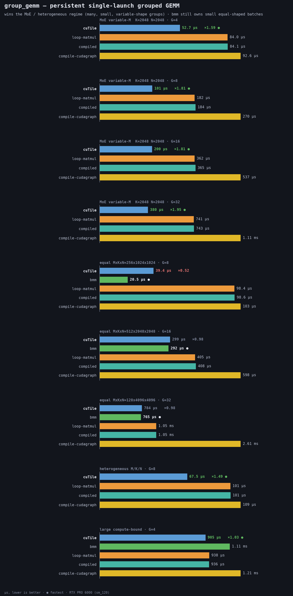
the persistent single-launch grouped GEMM already wins the MoE regime with today's static scheduler, up to 1.95x at G=32, CLC is the lever for the cases it still loses: small equal-shaped batches where bmm wins outright